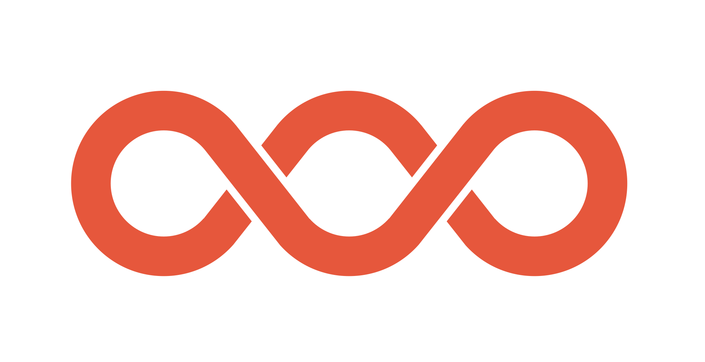

L10. 새로운 기술의 진화 방향
인간과의 관계를 중심으로
수업 목표
- 인공지능과 인간지능의 공통점과 차이점에 대해 이해한다.
- 생태학의 개념들을 통해 기술과 인간의 관계에 대해 알아본다.
- 기술이 변화시킨 신뢰에 대해서 알아본다.

인공지능과 인간지능의 공통점과 차이점
지난 시간에 제기한 문제들
- 스스로 문제를 해결하는(해야만 하는) 상황에 놓인 인공지능의 경우 유전자로 부터 권한을 위임받아 자손을 남기기 전까지 스스로 문제를 해결해야하는 인간지능(뇌)과 어떤 부분이 다른 것일까?
- 튜링 테스트를 통해 생성형 AI들을 진짜 인간하고 구분하지 못한다면 인간지능과 다르지 않다고 못할 이유는 무엇인가?
인간지능에 특권을 부여하려는 시도
- “박쥐가 된다는 것은 어떤 것인가?”
- ‘중국어 방 논변’
- ‘색채학자 메리 논변’
박쥐가 된다는 것은 어떤 것인가?(토마스 네이글)
음파로 주위의 환경을 파악하는 박쥐의 고유 감각기관을 인간이 가지고 있지 않다.
설령 박쥐의 감각기관을 이식받는다 해도 박쥐로 태어나 박쥐로 경험하고 살아간 박쥐를 온전히 이해하는 것은 불가능하다고 말한다.
감각기관등을 통해서 얻는 고유한 느낌과 같은 것들은 객관적이고 물리적인 사실들을 통해서 전달될 수 없다.
박쥐가 된다는 것은 어떤 것인가?(토마스 네이글)
박쥐의 감각기관을 물리적으로 충분히 구체적으로 구현한 로봇이 있다고 하더라도 해당 로봇이 박쥐의 진정한 의식상태를 느끼지는 못할 것이라는 주장
그러나 이러한 주장은 공허한 승리!
이러한 본유 속성으로서의 의식이 존재한다고 믿을 이유가 전혀 없음.
중국어방 논변(존 설)

중국어방 논변(존 설)
- 영어를 중국어로 번역해 주는 방.
- 안에 들어있는 사람은 영어는 하나 중국어를 모르는 사람. 문틈으로 영어로 된 내용을 받으면 방안에 있는 사람은 규칙집을 참고하여 아주 기계적인 방식으로 한자를 조합하여 작성
- 이후 결과를 밖으로 내보낸다.
- 이 방은 번역을 하는 인공지능의 작동방식과 정확히 같다. 그러나 내부구조를 보면 중국어를 ’이해’하고 있는 것은 하나도 없다.
- 따라서 인공지능은 사람이 이해를 하는 것과 같이 이해하지 못한다.
중국어방 논변에 대한 비판
- 시스템 답변(버클리) Systems Reply(Berkeley)
방에 갇힌 사람이 중국어를 이해하지 못하는 것은 사실이지만, 그는 전체 시스템의 일부에 불과하며 시스템은 중국어를 이해한다. 이 사람 앞에는 규칙이 적힌 커다란 두루마리, 계산하는 데 쓸 종잇조각과 연필, 한자 일람표가 있다. 그렇다면 이해는 한낱 개인에게 부여되는 것이 아니라 그가 속한 시스템 전체에 부여된다.
메리 논변(프랭크 잭슨)

메리 논변(프랭크 잭슨)
- 태어날 때부터 강제로 흑백의 방에서 흑백의 모니터를 통해 세상을 연구한 메리라는 과학자가 있다. 그녀는 색에 관한 모든 물리적 사실을 학습하게 되었다. 어느날 메리가 그 방에서 나와 실제 물체로부터 나오는 색을 마주하게 되었을 때, 그녀는 새로운 사실을 배운 것이 있을까? 아니면 원래 알던 것들이기 때문에 당연하게 받아들이게 될까?
- 잭슨은 메리가 분명히 새롭게 배우는 것이 있을 것이며 이러한 것은 물리적으로 설명되지 않는 의식 고유의 현상이라고 주장.
메리 논변에 대한 비판
- “흑백의 방에서 흑백의 모니터를 ‘통해’”
- 색에 관한 모든 물리적 사실
인공/인간 지능에 대한 데넷의 견해
- 의식은 과학적으로 설명될 수 없는 본유 속성이 아니다.
- 일반적 지능을 갖춘 강한 인공지능이 원리적으로 불가능한 것은 아니다.
- 그렇지만 현재 딥러닝을 기반으로 한 인공지능은 현실적으로 일반 지능이라고 부르기 어려우며 인간에 의존적일 수 밖에 없다.
- 하지만 이 ’도구’가 없었던 인간과 가지게 된 인간은 큰 차이가 있음에 분명하다.
그렇다면 의식은 무엇인가?
사용자-환각으로서의 인간의 의식
- 스마트폰에 깔린 앱 전체를 그 하드웨어 회로 설계와 메모리의 비트열만으로 (사용자 인터페이스를 보지 않고) 하의상달식으로 기술하고 설명해보겠다는 목표는 달성하기 요원하다.
- 앱의 사용자 인터페이스는 앱이 어떻게 작동하는지 그 복잡한 세부 사항을 알지 못하고 또 알 필요도 없는 사용자(우리)도 그 앱의 능력을 이용할 수 있게 하기 위해 존재
- 우리 뇌 안에 저장된 그 모든 앱의 사용자-환각도 같은 이유에서 존재한다.
- 그 복잡한 상세를 알 수 없고 또 알 필요도 없는 사용자(다른 사람들)가 우리의 능력을 (어느 정도) 사용할 수 있게 만들어주는 것이다.
- 그런 다음 우리는, 우리 뇌 안의 손님들과 대략 같은 조건에서, 우리 스스로 그것들을 사용하게 된다.
전통적 AI에 대한 비판
- 에너지 포획과 자기 보호의 필요를 도외시함으로써 자신들의 탐색을 기생적 체계로 제한하여 인간 유지,보수자들에게 늘 의존하는, 마음설계자 지망생
- 구글 번역은 이중 언어 능통자들이 해놓은 수백만 건의 좋은 번역을 끌어다 쓰고 있음.
- 왓슨이 섭렵하고 있는 무시무시할 정도로 방대한 사실적 지식 역시 왓슨이 인터넷에서 매일 흡입하는 수백만 페이지의 정보에 의존
- 이 프로그램들은 거인들의 어깨에 서서 지성적 설계의 앞선 산물들이 드러내 보이는 모든 영리함을 마음껏 사용하고 있음.
인공지능의 의미
- 왓슨은 아주 깊은 곳에서부터 다윈주의적이다.
- 끊임없이 그리고 이해력 없이 이미 일어난 일로부터 정보를 추출하는 과정에 의해 추동됨.
- 왓슨도 자연선택도 그것들의 선택 과정의 범위 내에서 일어나지 않은 사건들의 유형에 대해서는 눈먼 것이나 마찬가지다.(예를들어 학습 데이터의 기반이 된 검색 엔진이 가지고 있는 자료의 시간 제약)
- 인간의 상상력, 즉 현재 우리가 있는 곳에서부터 단순히 언덕을 기어오르는 식으로는 접근 불가능한 현실을 그려낼 수 있는 역량은 우리로 하여금 선견지명 있는 설계를 하여 기회들을 창조하게 하고 그리하여 궁극적으로는 다른 방식으로는 이뤄낼 수 없는 사업과 인공물들까지 창조하게 하는 주요한 게임 체인저인 것으로 보인다.
초지능 AI의 탄생 가능성
- 원리적으로 불가능하지 않다면 초지능 AI가 탄생하기 위해 어떤 것들이 필요한가?
- 언어와 상식
- ex) 4학년 학생들이 롤러스케이트 경주를 하려고 한다. 경주하기에 가장 좋은 바닥은 어느 것일까? (a)자갈 (b)모래 (c)아스팔트 (d)풀
- 4학년 학생을 혹독한 군사 훈련소 훈련생으로 바꾸면?
- 개념과 이론의 누적 학습
- 과학적 가설 검증에 필요한 개념과 이론들
- 행동 발견하기(잘게 쪼개기)
- 맷돼지를 잡고 비자를 신청하고 항공권을 사는 것
- 정신활동 관리하기(효율적 인지)
- 우리는 바둑만 두는 것도 아니고 열쇠만 찾는 것도 아니다.
- 언어와 상식
초지능이 도래하기 전 더 큰 문제
- 초지능이 도래하기 전 너무 일찍 과도한 권한을 기술에 넘겨주는 것.
- 더글러스 호프스태터는 구글의 검색어 추천 기능에 대해 분노를 느끼고 해당 기능을 담당하는 팀에 있는 자신의 제자에게 항의 서한을 보내기도 하였음.
- “글쓰기를 할 때 둘 중에 어떤 표현이 높은 빈도로 사용되는지 확인하기 위해 검색하곤 하는데 구글이 내가 입력한 구절을 있는 그대로 받아들이지 않고 내가 쓴 것을 아무 거리낌 없이 마음대로 다른 단어들로 대체해버린다면 그리고 그 상태에서 빈도를 왜곡한다면 사용자를 심하게 오도하는 것이다.”
토론 거리
- AI가 풀기 힘들지만 사람은 쉽게 풀 수 있는 문제를 만들어보시오!
- 생성형 AI를 어떤 방식으로 이해하는 것이 바람직한지에 대한 견해를 나눠봅시다.

기술과 인간의 관계
문화적 인간이 진화할 수 있었던 이유
- 초기 형태의 사회적 학습(즉, 따라하기)이 가능하면서 문화의 자본들이 무리안에 쌓이게 됨
- 이러한 환경에서는 문화적 요소들을 잘 습득하는 개체가 유리하다.
- 사냥과 같은 생태적 필요성에 의한 행동들 외에도 노래(언어), 춤(몸의 동작) 등의 집단을 이루는데 필요한 문화적 요소에 대해 탁월한 개체들이 매력적인 상대로서 생존과 번식에 유리하게 되고,
- 이에 따라 문화적 요소들도 함께 융성하게 되면서 정적 되먹임 고리 형성
- 그러나 이러한 정적 되먹임 고리로 유기체와 문화의 진화에 대해 모두 설명할 수 있을까?
흔한 정적 되먹임 고리 사례
- 알베도(Albedo)와 극지의 빙하 면적의 관계
- 출산과정에서 옥시토신 분비
- 정적 되먹임 고리의 과정은 언젠가 끝이 나는 과정
- 빙하 면적이 다 녹거나, 출산이 이루어질때
되먹임 고리의 종결
- 문화의 발전은 계속해서 일어나는데 그에 대응하는 인간의 유기체적인 진화가 일어나고 있는가?
- 문화의 발전의 속도와 유기체 진화의 속도의 차이가 발생
- 문화가 인간의 유기체적인 특성에 도움을 주는 쪽이 아닌 인간의 유기체적인 특성을 착취하는 구조가 발생
- 문화가 인간의 유기체적인 특성에 의존하지 않고도 발전할 수 있게 되면 더욱 가속화 될 것.
공생(Symbiosis)의 종류
- Mutualism(상리공생)
- Commensalism(편리공생)
- Amensalism(편해공생)
- Paraticism(기생)
Tip
공생이 아닌 경쟁의 관계 또한 생물계에서 중요한 개념.
1. Mutualism
- 서로 다른 종의 동물이 상호작용을 통하여 서로 이익을 주고 받는 것을 의미한다.
- 흰개미와 흰개미의 내장 속에 사는 원생동물(원생동물이 흰개미가 먹는 섬유질을 소화시켜주고 흰개미에게서 먹이와 집을 얻는다)

2. Commensalism
- 둘 이상의 개체가 함께 살아가고 있을 때에, 두 개체 중의 하나가 이익을 얻고 다른 개체는 영향을 받지 않는 공생 관계이다.
- 상어와 빨판상어, 고래의 피부에 사는 따개비

3. Amensalism
- 예를 들어, 착생 식물이 나무에 붙어 생활하는 것으로, 숙주 나무가 착생 식물의 잎으로 덮여 광합성을 방해받는 것 또한 있을 수 있다. 그러면 착생 식물은 기생 식물에 대해 “영양을 뺏는 도적”이라고 할 수 있다. 이 경우 이 관계는 편해공생이라고 할 수 있다.

4. Paraticism
한 생물이 다른 생물에게는 도움을 주는 반면 다른 생물로부터 자신은 도움을 받지는 못하거나 오히려 해를 받는 경우를 말한다.
뻐꾸기 탁란에서 부터 각종 기생충에 이르기까지

관계의 변화
::: {.r-stack} 상리공생 ::상
관계의 변화
상리공생 → 편리공생
관계의 변화
상리공생 → 편리공생 → 기생
- 점진적으로 관계가 변화할 수 있음
- 기획 의도대로 영원히 가지 않음
도구 사용과 지식
- 원자력 발전소의 작동원리를 두루 뭉술하게 알고서 발전소를 건설하고 운영할 수 있는가?
- 원자력 발전소의 원리를 모른채로 그곳에서 생성되는 전기 에너지를 활용하는 것과 무엇이 다른가?
- PC나 Mac의 하드웨어에서 OS의 GUI가 연결되는 원리를 모르고 제품을 만들고 운영할 수 있는가?
- 사용자가 PC나 Mac의 GUI를 다룰때 하드웨어가 어떻게 작동하는지 모른채로 쓰는 것과 무엇이 다른가?
도구 사용과 지식
- 검색엔진, SNS, youtube, netflix 의 추천 시스템을 원리를 모르고 운영할 수 있는가?
- 사용자들이 그러한 추천 시스템의 원리를 모르고 위의 서비스를 사용하는 것과는 무엇이 다른가?
- 설계원리를 이해하지 못하고 AI 거대 언어 모델을 만들 수 있는가?
- 실제로 대중들이 AI의 작동원리를 모르고 자연어를 통해 필요한 정보들을 생성해내는 것과는 무엇이 다른가?
소셜 딜레마
토론 거리
- 원자력 발전소, OS의 GUI, 검색엔진 및 SNS 그리고 생성형 AI 기술 사례를 공생의 관점으로 생각해보자.
멍게의 생애사
어린 멍게는 적절한 바위 또는 산호초를 찾아 바다를 헤매고 다닙니다. 이 작업을 하기 위해 기본 신경계가 있습니다. 결국 자리를 찾아 뿌리를 내릴 때는 더 이상 뇌가 필요없기 때문에 스스로 뇌를 먹습니다. 마치 테뉴어를 받은 것과 같습니다. - <의식의 수수께끼를 풀다> 중에서, 데니얼 데닛


생성형 AI와 멍게
- 우리가 우리 뇌를 먹는 일은 일어나지 않겠지만,
- 생성형 AI가 수익성을 무기로 경쟁적으로 우리 삶의 전영역에 들어오게 될 때 우리의 이해력이 의존하고 있는 영역까지도 섣불리 기계에 의존해버릴 수 있음.
- 이러한 상황에서 어떤 AI 서비스가 좋은 서비스인지 판단할 수 있을까?
- 그리고 이러한 기술들을 우리가 신뢰해도 되는가? -> 이미 신뢰는 기술에 의해 변화하고 있음.
가능한 시나리오
- 인간의 의식 또한 커뮤니케이션을 위한 기능이라고 한다면
- 인공지능이 인간과 소통을 하는 관계가 정립된다면 의식처럼 ‘보이는’ 기능들이 정교화 될 가능성이 있음.
- 인공지능이 확산되기 위해서는 ‘신뢰감’을 주는 이미지를 ’얻고자’ 할 것이다.

기술을 통한 신뢰의 변화
기술에 의한 신뢰의 변화 단계
- 1단계 정량화, 기술이 인간들 사이의 신뢰의 모습을 정성적인 것에서 정량적, 수치적인 것으로 바꾼다.
- 2단계 의인화, 기술이 인간과 유사한 모습으로 다가온다.
- 3단계 분산화, 기술의 도움으로 분산적 신뢰로 도약한다.
1단계 정량화
- 인간은 오랜시간 지역적 신뢰에 기반한 사회를 가졌으나 점차 제도적 신뢰로 옮겨가게 되었고, 이 제도적 신뢰 또한 기술의 영향을 받아 수치적인 형태로 기록되기 시작하였음.(순응편향)
- 인간들 사이의 신뢰의 모습이 평점, 별점 등의 정량적 형태로 바뀌게 된다.
- 나랑 친한 사람을 알기 위해 확인하면 좋은 것
- 신뢰할 만한 식당과 미용실을 찾는 일
Nosedive
영상링크 : [Link]
중국의 사회신용제도

중국의 사회신용제도

The game of life
- 신용정보, 지불이행능력, 인적사항, 행동과 구매 패턴, 대인관계 등 에 대한 자료를 바탕으로 개인에 대해 판단
돈으로 살 수 없는 것들 = 수치화 할 수 없는 것들
- 플랫폼 의존성↑,
- 수치화 할 수 있는 것들↑
- 수치화된 정보를 통한 평판의 형성
- 한번도 만나보지 않은 지구 반대편에 살고 있는 에어비엔비 호스트의 평점을 알 수 있고 그것을 통해 그 사람을 평가할 수 있음.
자율주행차에 대한 신뢰
- 자율주행차가 공공선을 추구하는 것이 옳다고 생각하지만 자신은 그러한 자동차를 구매하지 않을 것이라는 사회적 딜레마가 보고 되어 있음.
- 자율주행차의 사고율에 기준이 정립되고 데이터가 축적되며, 경제적 가치가 실현되면 어느 순간 인간이 운전하는 행위 자체가 비도덕적이라는 인식이 생기게 될 수도 있음.
2단계 의인화
- 수치는 인간의 얼굴을 통해 다가온다. ex. 당근마켓의 ‘매너온도’
- 기술이 uncanny velly를 피한 외양을 가지게 된다.
- 외양 뿐만 아니라 언어 사용과 같은 feature를 조작하여 다양한 형태의 인격을 만들어 낼 수 있음.

Uncanny valley

아이보 장례식

chatGPT 와 Bard의 personality 경쟁

3단계 분산화
- 블록체인 기술의 등장으로 제도적 신뢰에서 분산적 신뢰로 도약할 수 있게 됨.
- 분산적 신뢰는 지역이든 제도 기반이든 인간 사이의 신뢰를 대체할 수 있음.
Yap섬의 fei

Yap섬의 fei
- 얍섬에서는 석회석이 나지 않아 위조가 불가
- 희귀하고 구하기 어려워서 가치를 상실하지 않는다.
- 돌이 너무 커서 성인남자 20명 이상 붙어 거대한 나무 막대를 이용해야 옮길 수 있는 경우도 있었음.
- 이러한 노고를 줄이기 위해 섬사람들은 페이를 원래 자리에 두고 소유권만 이전하기로 함.
- 소유권 이전 등의 거래 결과는 공동체 구성원의 마음에 분산 저장, 집단의 합의
이더리움의 원대한 목표
- 비트코인으로부터 영감을 받은 비탈릭 부테린
- “산업혁명이 일어나면서 최초로 인간의 노동력이 기계로 대체됐다. 하지만 하부 조직이 자동화되어 육체노동자의 필요성이 사라졌을 뿐이다. …… 이제는 상부의 관리 조직을 제거할 수 있을까?” - 비탈릭 부테린
토론 거리
- 기술의 의인화에 대해서 조심스럽게 접근해야한다고 주장하는 쪽이 있지만 이미 기술의 의인화는 사업을 하는 사람들이 고려하고 있는 주요한 특징인 상황이다. 이러한 상황에 대해 각자의 입장을 공유해봅시다.

강의 요약
강의 요약
- 인공지능과 인간지능의 차이에 대한 다양한 의견들을 이해하고 인공지능에 대한 자신만의 생각을 발전시킬 수 있었다.
- 도구와 동료의 경계를 오가는 기술과 인간의 관계에 대해 고찰해보았다.
- 기술과 인간, 그리고 인간 사회의 신뢰가 기술에 의해서 변화하고 있음을 확인했다.
다음 시간에는…
- 인간 본성의 과학적 이해와 스타트업에 대해서 정리하는 시간


인간 본성의 과학적 이해